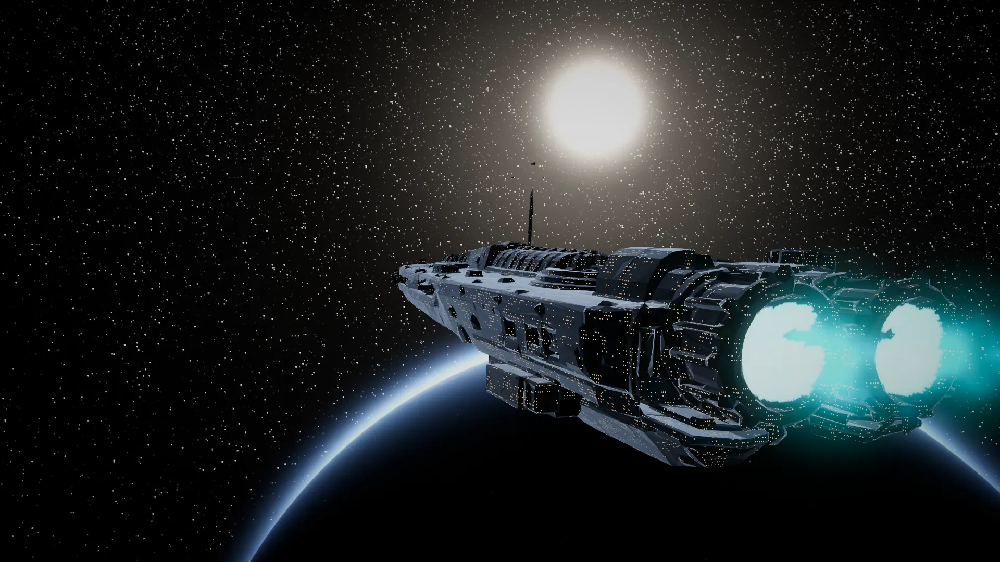
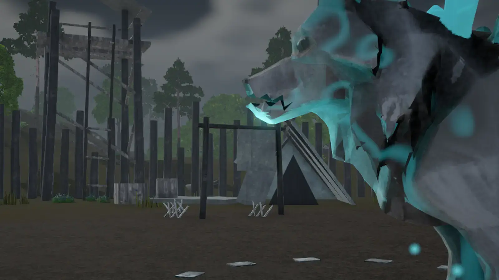
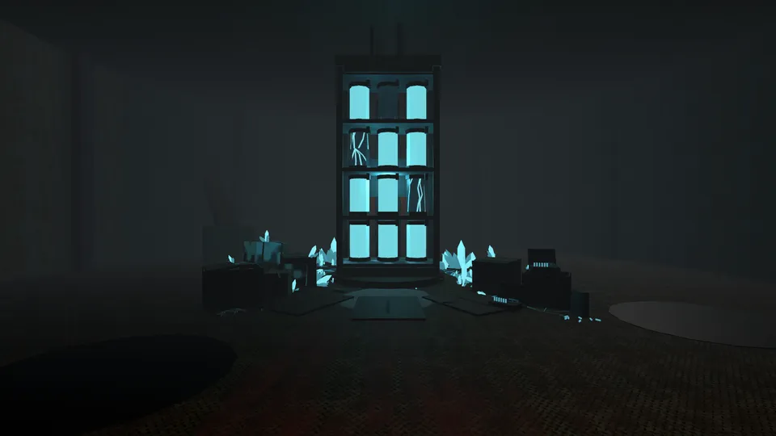

Action combat
Light and heavy swings, blocks and dodges on a stamina bar. Time a perfect block or dodge and the fight turns.

Friends-only playtest
The ark came down hard. Build the camp, hunt what the Ether changed, and earn your place on a planet that wants you gone.
Get the gameSmall launcher; it fetches the game on first run. Windows 10/11.
Grab the launcher with the button above.
Open the launcher you downloaded. It sets up the game for you.
Paste the invite code your host sent you.
Pick a name, press Play, and wake up in the infirmary.
Light and heavy swings, blocks and dodges on a stamina bar. Time a perfect block or dodge and the fight turns.
Chop, mine, fish and cook, then smith your own bronze. Skills level the old-school way, with perks every five levels.
A player-run order board: post what you need, fill what others want. Or sell to the Stores, and pay into camp projects that visibly upgrade the town.
A wrecked hold of the ark. Reach Standing 10 to get in, then find out why nobody there survived.
Everything you do earns Standing, from 1 to 100. It opens new places, unlocks perks and lets you wear the titles you've earned.
From waking in the infirmary to Old Greymaw and Dead Stock.

Threat sighted
The old wolf who leads the pack was the first thing the Ether changed. Crystals split his hide, and his wolves follow him into the camp.
Watch the pounce. Dodge it, then punish.

A year ago the colony ark came down in pieces. The survivors who crawled out of the pods built a palisade, a forge and an infirmary, and called it a camp.
The ark's power source, the cyan Ether, spilled into the ground. Things that drink it don't stay what they were. Old Greymaw was only the first.
See the latest release notes on the download page.